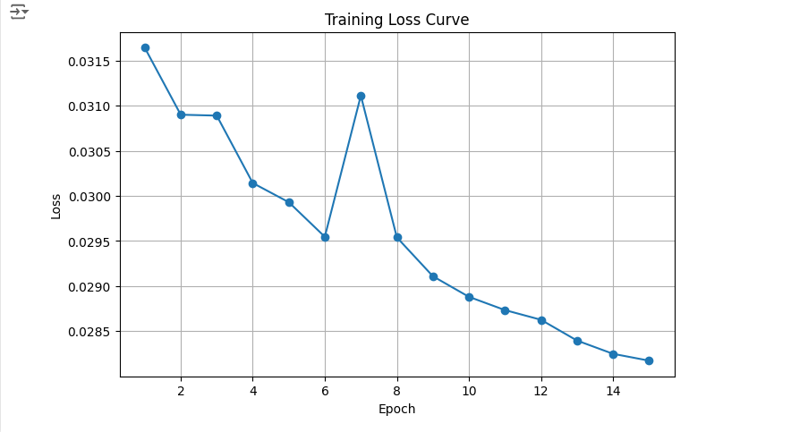
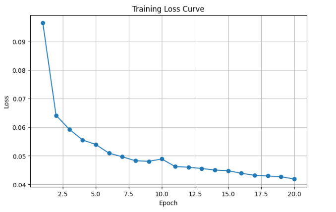
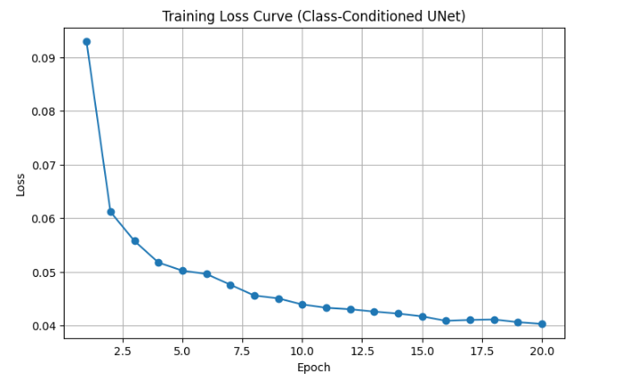

This section demonstrates the gradual addition of noise to an image at different time steps, visualizing the noising process.
A plot of the training loss recorded every few iterations during the whole training process.
Sample results from the test set after training the model for one epoch, showcasing early performance.
Sample results from the test set after training the model for five epochs.
Sample results with varying noise levels outside the range seen during training. Same image used for consistency.
A plot showing the loss over the entire training process for the time-conditioned UNet model.
Generated samples after training the time-conditioned UNet for 5 and 20 epochs, highlighting improvements over time.
A plot showing the loss over the entire training process for the class-conditioned UNet model.
Generated results for class-conditioned UNet after 5 and 20 epochs, including four variations for each digit.